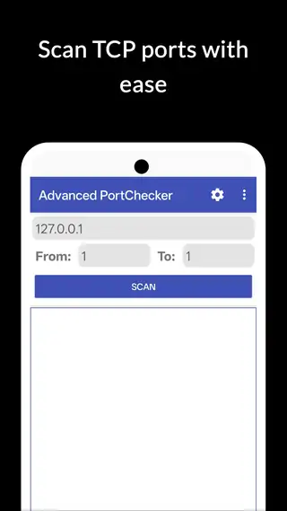
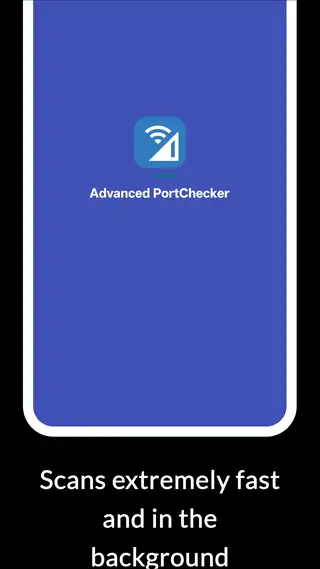

Advanced PortChecker
أمان وخصوصية
Advanced PortChecker is a utility to check if TCP ports are open or not. Features: Scan TCP ports Scans can be executed in the background Scans are executed in real-time Supports dark mode No ads, no spyware, no tracking
✓ ترخيص مفتوح (GPL-3.0-only) · آخر تحديث: 2026-11-04
1.5.7الإصدار
3.2 MBالحجم
GPL-3.0-onlyالرخصة
Open in Kanzتحميل APK (3.2 MB)
Download APK
SHA-256: 2dae41722f52a3da2a0c6c658fb2d2723e9c814c486902ddee359ab2c32dbdb1


تطبيقات تانية لنفس المطوّر (3)
More apps from this developer: com.codedead
امسح الكود لفتح صفحة التطبيق
Scan to open this app page
لو كنز مش متثبت عندك: نزّل متجر كنز.
Not installed? Get the Kanz store.